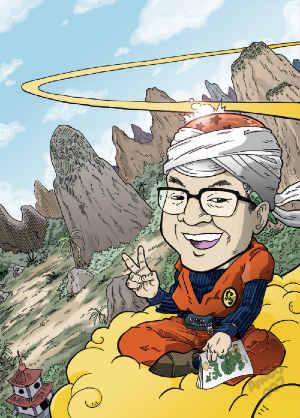
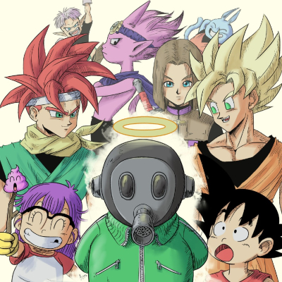

Falece Akira Toriyama, Criador de Dragon Ball, aos 68 Anos!
Akira Toriyama, renomado mangaká japonês conhecido pelas icônicas séries Dragon Ball e Dr. Slump, faleceu aos 68 anos de idade. Sua morte, decorrente de complicações de um hematoma subdural agudo, foi anunciada recentemente, deixando fãs em luto.

Akira Toriyama, o aclamado criador de Dragon Ball e Dr. Slump, faleceu aos 68 anos de idade, deixando uma marca indelével na cultura pop japonesa e mundial. Sua morte, atribuída a complicações de um hematoma subdural agudo, foi anunciada recentemente pelo site oficial de Dragon Ball, embora o falecimento tenha ocorrido em 1º de março.
Ao longo de sua vida, Toriyama cativou milhões com suas criações extraordinárias, incluindo personagens icônicos como Goku, Vegeta, Piccolo e Gohan. Seu talento artístico e narrativo deixou uma marca indelével na indústria do entretenimento, enriquecendo a infância e adolescência de várias gerações ao redor do mundo.

A família e amigos próximos realizaram um funeral fechado em sua homenagem, enquanto os fãs terão a oportunidade de se despedir do mestre mangaká em eventos especiais que serão organizados no Japão em data futura.
Nascido em 5 de abril de 1955, Akira Toriyama iniciou sua carreira como mangaká em 1978, com a publicação de Wonder Island na revista Weekly Shōnen Jump. Desde então, ele continuou a criar obras que encantaram e inspiraram inúmeras pessoas ao redor do mundo. Seu legado perdurará através de suas obras e do carinho dos fãs que continuam a apreciar seu trabalho único.
Acompanhe Izuku Midoriya, conhecido como Deku, enquanto ele luta para alcançar seu sonho de se tornar o maior herói de todos os tempos. Com uma narrativa repleta de ação, amizade e desafios emocionantes, este anime conquista corações em todo o mundo. Prepare-se para uma aventura inesquecível e mergulhe no mundo dos heróis com Boku no Hero!
Acompanhe Yuji Itadori enquanto ele se envolve em uma batalha épica entre maldições e exorcistas. Com animação de alta qualidade e personagens cativantes, Jujutsu Kaisen promete uma experiência emocionante para os fãs de anime. Assista agora e mergulhe nesta aventura cheia de adrenalina!
Acompanhe Yuji Itadori enquanto ele se envolve em uma batalha épica entre maldições e exorcistas. Com animação de alta qualidade e personagens cativantes, Jujutsu Kaisen promete uma experiência emocionante para os fãs de anime. Assista agora e mergulhe nesta aventura cheia de adrenalina!